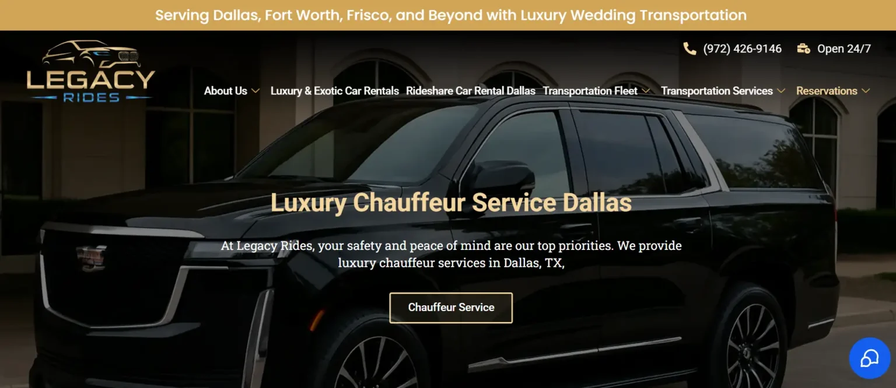
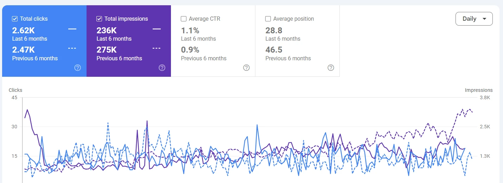

01
Untapped search demand
People were searching for luxury car rental Dallas, chauffeur service Dallas, wedding transportation, and similar high-intent terms, but the site was not fully optimized for them.
Legacy Rides already offered premium luxury and exotic transportation in Dallas, but the website was not fully capturing the demand from customers searching for luxury car rentals, chauffeur services, weddings, and special-event transportation.

When the site and search data were reviewed, several issues were limiting its ability to compete for valuable luxury transportation searches in Dallas and nearby areas.
People were searching for luxury car rental Dallas, chauffeur service Dallas, wedding transportation, and similar high-intent terms, but the site was not fully optimized for them.
Important service pages needed clearer keyword targeting, better content hierarchy, and stronger relevance to compete against established transportation brands.
The website had limited supporting content around luxury transport, chauffeur services, events, and exotic rentals, which restricted topical depth.
Some pages were already earning impressions, but titles and descriptions needed improvement to attract more clicks from competitive search results.
Instead of relying on shortcuts, we improved the website’s core SEO structure and aligned key pages with the searches customers use when looking for luxury transportation.
Pages for luxury car rental, chauffeur services, wedding transportation, prom transportation, and other important services were improved for clearer keyword targeting.
The site was optimized for Dallas, Frisco, Fort Worth, and surrounding service areas to strengthen local search relevance.
Service content was rewritten and structured around what customers actually search before booking luxury and exotic transportation.
Titles and descriptions were improved so important pages could stand out more clearly in Google search results.
Relevant backlinks and stronger internal linking helped important service pages gain better support and contextual relevance.
The SEO work improved Legacy Rides’ ability to appear for competitive service searches while building a steadier flow of organic visibility and clicks from Google.



Legacy Rides already had a strong luxury transportation offer. The main opportunity was making the website easier to find for the right customers. By improving service pages, location relevance, metadata, internal structure, and authority signals, the brand built a stronger and more sustainable organic search presence.
Review the performance